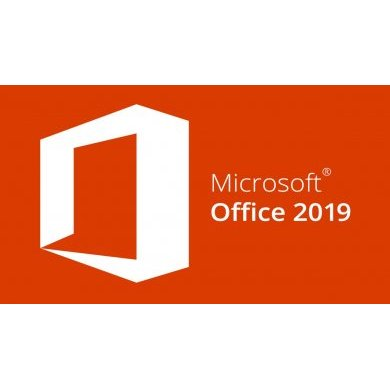

Bio

Filósofo por formação, programador por opção.
Vaguei por diversos cursos, movido sempre por uma vontade de aprender algo novo: Letras, Jornalismo, Filosofia e, por fim, resolvi aderir à minha paixão infantil por tecnologia e computação.
Filósofo por formação, programador por opção.
Vaguei por diversos cursos, movido sempre por uma vontade de aprender algo novo: Letras, Jornalismo, Filosofia e, por fim, resolvi aderir à minha paixão infantil por tecnologia e computação.


Minha experiência mostrou que possuo ferramentas
importantes para a atuação nesse campo, como carisma,
capacidade de manter a calma e de procurar soluções
diplomáticas em todas as situações. A minha formação
também possui forte relação com a área comunicativa,
e certamente ajudou a fortalecer esses traços naturais. |
 |
 |
 |  |